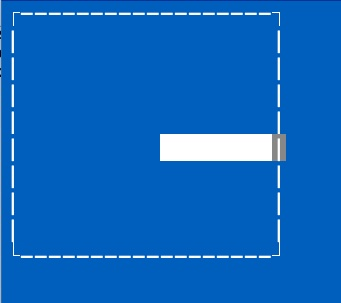

- Author
- B. Jacob
Présentation du Jeu
Un mur est plein automatiquement par un pinceau fou et fait n'imorrte quoi ou presque.
Le but est de contrôler le pinceau pour peindre le mur correctement.
Objectifs
Ce TP à pour but de manipuler les outils de communication entre processus standards vus en cours. Il s'agit ici de faire communiquer 2 processus indépendants
-
celui qui exécutera la fonction pinceau() qui gère les interactions entre l'utilisateur (vous) et le pinceau. Cette fonction devra donc faire tourner le pinceau dans les quatre directions HAUT, BAS, DROITE et GAUCHE pour peindre tout le mur.
-
celui qui exécutera la fonction mur() qui fait avancer le pinceau de manière aveugle sur le mur, dans une direction, jusqu'à ce qu'il bute sur un côté du mur.
Ces processus seront gérés dans le programme peinture.c que vous devrez donc programmer.
Utilisation
-
Désarchivez et décompressez l'archive en faisant
tar xvf TP_Peinture.tar.gz
-
Compilez le programme par
make -f Makefile all.
-
Exécutez le par
./peinture 10 20 M :
vous devriez alors voir le pinceau qui va buter avec une vitesse moyenne sur le côté droit d'un mur de dimensions 10X20
